Continuous Foreground Extraction
Continuous foreground extraction returns a soft, same-size foreground-membership image rather than a binary decision. Every output pixel is an <code>IntensityPixel</code> in <code>[0, 1]</code>: zero means background, one means foreground, and intermediate values preserve uncertainty for later MAGE image arithmetic or thresholding.
bundle_image2DIntensity_foreground_extraction_factoryThis factory bundle is opt-in through <code>getextensionforeground_intensityimg()</code>. Its specialization fixes the output dimensions, pixel category, and storage type. It is separate from the discrete foreground bundle, so an intensity chromosome cannot unexpectedly receive a binary mask.
Random Walker foreground probabilities
<code>randomwalkerforeground</code> treats every pixel as a vertex in a four-neighbor weighted graph. Similar adjacent intensities receive strong conductance; a walker crosses a strong intensity boundary less readily. Hard foreground and background seeds fix the Dirichlet boundary conditions, and one sparse Laplacian solve gives every unknown pixel the probability that a random walker reaches foreground before background.
The original interactive method requires labeled seeds. This MAGE variant uses the same deterministic saliency-derived seeds as the discrete foreground operators:
- high-saliency interior pixels are fixed to probability one;
- border-connected low-saliency pixels are fixed to probability zero; and
- every remaining pixel receives a continuous probability from the solve.
Without an explicit saliency input, spectral-residual saliency is computed internally. A same-size intensity saliency map can instead come from another MAGE chromosome. Flat saliency supplies no foreground evidence and returns a typed all-zero image.
Specialized callable
probabilities = fn(image)
probabilities = fn(image, contrast)
probabilities = fn(image, contrast, foreground_quantile)
probabilities = fn(image, saliency)
probabilities = fn(image, saliency, contrast)All signatures have at most three effective MAGE inputs. Ignored trailing framework <code>args...</code> are accepted by every overload.
| Parameter | Mapping | Effect | Default |
|---|---|---|---|
| <code>contrast</code> | finite values clamped to <code>[0, 1000]</code> | Controls edge conductance <code>exp(-contrast * difference²) + 1e-6</code>. At zero, only geometry matters; larger values preserve stronger intensity boundaries. | <code>90.0</code> |
| <code>foreground_quantile</code> | finite values clamped to <code>[0.5, 0.99]</code> | In automatic-saliency calls, controls how selective the hard foreground seeds are. | <code>0.95</code> |
Non-finite values use the defaults. When saliency is supplied explicitly, its seed quantile remains <code>0.95</code>, leaving the third MAGE input available for <code>contrast</code>.
using MAGE
using ImageCore: N0f8
values = fill(0.15, 64, 64)
values[20:45, 24:41] .= 0.85
saliency_values = zeros(64, 64)
saliency_values[20:45, 24:41] .= 1.0
image = SImageND(IntensityPixel{N0f8}.(values))
saliency = SImageND(IntensityPixel{N0f8}.(saliency_values))
fn = bundle_image2DIntensity_foreground_extraction_factory[
:random_walker_foreground
].fn(typeof(image))
probabilities = fn(image, saliency)
(
size(probabilities),
eltype(probabilities),
extrema(reinterpret(probabilities.img)),
)((64, 64), IntensityPixel{FixedPointNumbers.N0f8}, (0.0N0f8, 1.0N0f8))Cell, coffee, and Lena examples
The gallery uses the vendored fixtures from the saliency and discrete foreground pages. Cell and coffee are downsampled once; Lena remains at its native 256×256 resolution.
Default results with supplied saliency
Each row shows the intensity input, the supplied spectral-residual saliency, and the continuous foreground-probability output. These are not binary masks: gray pixels retain the Random Walker uncertainty.
| Fixture | Input | Spectral-residual saliency | Foreground probability |
|---|---|---|---|
| Cell |  |  | 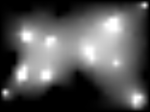 |
| Coffee | 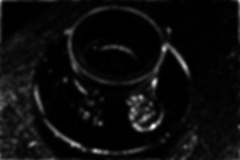 | 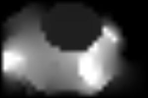 | |
| Lena |  |  | 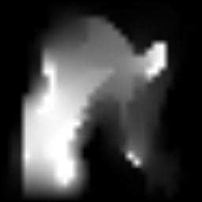 |
As with the discrete operators, saliency supplies attention rather than semantic identity. If Lena's saliency emphasizes the feather or background, Random Walker propagates probabilities from those seeds; it does not know that the intended semantic object is the woman.
Effect of contrast
The same coffee image and supplied saliency map are used in every call. With <code>contrast = 0</code>, equal conductance makes the result a geometric harmonic interpolation. Increasing contrast makes intensity boundaries more resistant to probability diffusion.
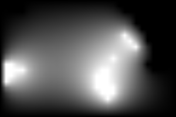
contrast = 0.0
contrast = 90.0 (default)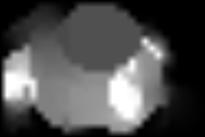
contrast = 500.0Effect of foreground seed quantile
These calls compute spectral-residual saliency internally. A higher quantile makes the probability-one seed set smaller and more selective; the Laplacian still assigns every unseeded pixel.
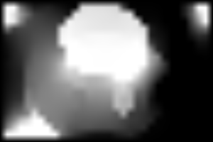
foreground_quantile = 0.9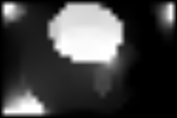
foreground_quantile = 0.95 (default)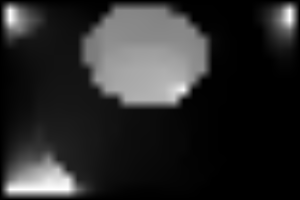
foreground_quantile = 0.98The output can remain soft for downstream multiplication (<code>image * probabilities</code>) or be converted later to a binary decision (<code>probabilities >= threshold</code>).
Closed-form alpha matting
<code>closedformmatting</code> implements the grayscale form of the Levin–Lischinski–Weiss matting Laplacian. Inside each 3×3 neighborhood, it models foreground and background colors as locally smooth linear mixtures. Known foreground and background trimap pixels constrain one sparse linear solve; unknown pixels become a continuous alpha matte.
The two-image form expects a real trimap:
- values at most <code>0.1</code> are hard background and remain exactly zero;
- values at least <code>0.9</code> are hard foreground and remain exactly one;
- intermediate values are unknown, not initial alpha estimates.
The image-only form first computes spectral-residual saliency and converts its high-saliency core and border-connected low-saliency region into those same trimap constraints. Flat saliency provides no foreground evidence and returns a typed all-zero image.
Specialized callable
alpha = fn(image)
alpha = fn(image, edge_sensitivity)
alpha = fn(image, edge_sensitivity, foreground_quantile)
alpha = fn(image, trimap)
alpha = fn(image, trimap, edge_sensitivity)All signatures have at most three effective MAGE inputs, excluding ignored framework <code>args...</code>.
| Parameter | Mapping | Effect | Default |
|---|---|---|---|
| <code>edge_sensitivity</code> | finite values clamped to <code>[2, 12]</code> | Sets the matting-Laplacian regularizer to <code>epsilon = 10^-edge_sensitivity</code>. Higher values preserve subtler local intensity relationships; lower values regularize nearly flat neighborhoods more strongly. | <code>7.0</code> |
| <code>foreground_quantile</code> | finite values clamped to <code>[0.5, 0.99]</code> | Controls how selective the automatically generated hard-foreground trimap region is. | <code>0.95</code> |
Non-finite values use the defaults. Explicit-trimap calls reserve the third MAGE input for <code>edge_sensitivity</code>. To keep evaluation below MAGE's runtime budget, inputs above 9,216 pixels solve the same closed-form objective on a deterministic aspect-preserving working grid. The result is lifted bilinearly to the specialized output dimensions and original hard constraints are restored exactly.
using MAGE
using ImageCore: N0f8
values = repeat(reshape(range(0, 1; length = 64), 1, :), 64, 1)
trimap_values = fill(0.5, 64, 64)
trimap_values[:, 1:5] .= 0.0
trimap_values[:, 60:64] .= 1.0
image = SImageND(IntensityPixel{N0f8}.(values))
trimap = SImageND(IntensityPixel{N0f8}.(trimap_values))
fn = bundle_image2DIntensity_foreground_extraction_factory[
:closed_form_matting
].fn(typeof(image))
alpha = fn(image, trimap)
(
size(alpha),
eltype(alpha),
extrema(reinterpret(alpha.img)),
count(value -> 0 < value < 1, reinterpret(alpha.img)),
)((64, 64), IntensityPixel{FixedPointNumbers.N0f8}, (0.0N0f8, 1.0N0f8), 3456)Cell, coffee, and Lena alpha mattes
The trimap column visualizes the exact automatic constraints: black is known background, white is known foreground, and gray is unknown. The output column contains the resulting continuous alpha matte.
function closed_form_function(image)
return g_timed(bundle_image2DIntensity_foreground_extraction_factory[
:closed_form_matting
].fn(typeof(image)))
end
function automatic_closed_form_trimap(image)
saliency_fn = g_timed(bundle_image2DIntensity_saliency_fixation_factory[
:spectral_residual_saliency
].fn(typeof(image)))
saliency = saliency_fn(image)
trimap_values, _ =
MAGE.image2D_foreground_extraction_continuous.
_automatic_closed_form_trimap(reinterpret(saliency.img), 0.95)
return SImageND(eltype(image).(trimap_values))
end
for (name, image) in (("cell", cell), ("coffee", coffee), ("lena", lena))
matting_fn = closed_form_function(image)
trimap = automatic_closed_form_trimap(image)
alpha = matting_fn(image, trimap)
save_continuous_foreground_example(
name * "_closed_form_trimap.png",
trimap,
)
save_continuous_foreground_example(
name * "_closed_form_alpha.png",
alpha,
)
end
coffee_matting = closed_form_function(coffee)
coffee_trimap = automatic_closed_form_trimap(coffee)
for sensitivity in (2.0, 7.0, 12.0)
alpha = coffee_matting(coffee, coffee_trimap, sensitivity)
save_continuous_foreground_example(
"coffee_closed_form_sensitivity_" *
replace(string(sensitivity), "." => "_") * ".png",
alpha,
)
end
for quantile in (0.9, 0.95, 0.98)
alpha = coffee_matting(coffee, 7.0, quantile)
save_continuous_foreground_example(
"coffee_closed_form_quantile_" *
replace(string(quantile), "." => "_") * ".png",
alpha,
)
end
nothing| Fixture | Input | Automatic trimap | Alpha matte |
|---|---|---|---|
| Cell | | 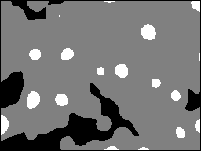 | 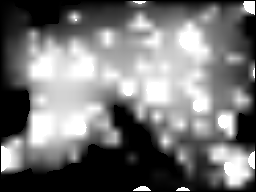 |
| Coffee | 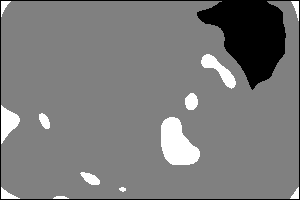 |  | |
| Lena | | 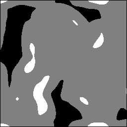 | 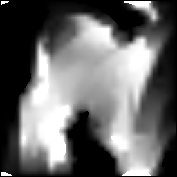 |
As with the other automatic foreground operators, these results follow visual saliency rather than semantic identity. A supplied trimap is preferable when the desired foreground object is known externally.
Effect of edge sensitivity
All three outputs use the same coffee image and explicit automatic trimap, so only the local matting regularization changes.
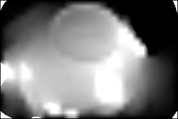
edge_sensitivity = 2.0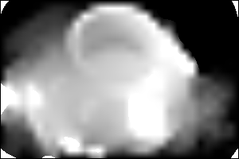
edge_sensitivity = 7.0 (default)
edge_sensitivity = 12.0Effect of automatic foreground quantile
These image-plus-number calls regenerate the saliency trimap each time. Higher quantiles make the known-foreground portion smaller and more selective.
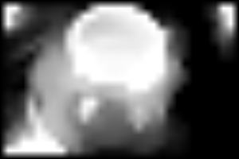
foreground_quantile = 0.9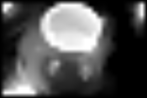
foreground_quantile = 0.95 (default)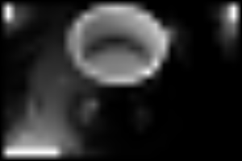
foreground_quantile = 0.98Without a mask, the seeds come from spectral-residual saliency, which responds to edges and unusual details, not to whole objects: on a bright disk it is about twice as high on the rim as inside. The blurred top of that map becomes the hard foreground seeds, so they straddle object edges (on a test disk, 46% of them lie outside it) and can never be corrected. That is why the automatic examples above are poor. Supply a rough mask (below) or a saliency map that is high inside the objects (e.g. a blurred copy of an image of bright objects).
Refining a rough mask (recommended)
random_walker_foreground and closed_form_matting also accept a rough binary mask and a band, with the same meaning as for the graph cuts: deep inside the mask is foreground, far outside is background, and the strip of width 2·band along its edge is solved for:
probabilities = random_walker_foreground(image, rough_mask, [band]) # band = 4
alpha = closed_form_matting(image, rough_mask, [band])In this mode the Random Walker's contrast adapts to the image (10 over the mean squared neighbour difference), so dim images such as the cells still get sharp boundaries; the matting uses the mask as its trimap.
rw = g_timed(bundle_image2DIntensity_foreground_extraction_factory[:random_walker_foreground].fn(I))
cf = g_timed(bundle_image2DIntensity_foreground_extraction_factory[:closed_form_matting].fn(I))
g_gallery(page, [
("cell.png", "`cell`", cell),
("fat.png", "`rough` = Otsu dilated by 7", fat),
("rw_band4.png", "`random_walker_foreground(cell, rough)`", g_call(rw, cell, fat)),
("cf_band4.png", "`closed_form_matting(cell, rough)`", g_call(cf, cell, fat)),
]; cols = 4, scale = 2)cell | rough = Otsu dilated by 7 | random_walker_foreground(cell, rough) | closed_form_matting(cell, rough) |
|---|---|---|---|
 |  | 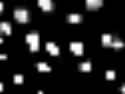 | 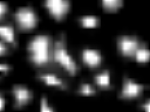 |
MAGE.image2D_foreground_extraction_continuous — Module
Deterministic continuous foreground extraction for intensity images.
Bundles
- bundleimage2DIntensityforegroundextractionfactory
The exhaustive operator list is on the Bundle Catalogue page.
MAGE.image2D_foreground_extraction_continuous.bundle_image2DIntensity_foreground_extraction_factory — Constant
bundle_image2DIntensity_foreground_extraction_factorySeeded, deterministic foreground extraction operators whose output is a same-size intensity image of soft foreground membership values in [0, 1]. Images above 32 on either axis are box pooled to a grid with longer axis 32 and preserved aspect ratio (224×100 → 32×14). Walker rough masks use majority; matting masks use guarded 1/8 occupancy. Trimap conflicts become unknown; soft outputs use bilinear lifting. Images at most 32×32 use their input grid. Existing third arguments retain their parameter meanings; maximum graph-node arity is three.
Factories are specialized with the concrete intensity output type before insertion into a MAGE library.
The bundle contains Random Walker segmentation and closed-form matting. Their seeds come from spectral-residual saliency computed internally, a same-size saliency map (Random Walker) or trimap (matting) from another MAGE image chromosome, or a rough binary mask with an uncertainty band ((img, mask, band)), which they refine to the image's edges.
MAGE.image2D_foreground_extraction_continuous.random_walker_foreground_image2D_factory — Function
random_walker_foreground_image2D_factory(::Type{I})Example: op(image, mask, 0) fixes mask pixels to one and other pixels to zero.
Images above 32 pixels on either axis use a 32-pixel working grid. All third inputs retain their existing parameter meanings.
MAGE.image2D_foreground_extraction_continuous.closed_form_matting_image2D_factory — Function
closed_form_matting_image2D_factory(::Type{I})Images above 32 pixels on either axis use a 32-pixel working grid. All third inputs retain their existing parameter meanings.
References:
- Grady, Random Walks for Image Segmentation (IEEE Transactions on Pattern Analysis and Machine Intelligence, 2006).
- Levin, Lischinski, and Weiss, A Closed-Form Solution to Natural Image Matting (IEEE Transactions on Pattern Analysis and Machine Intelligence, 2008).
Timings for the examples
Measured during this documentation build. See Timing methodology for measurement limits and input cases that can make operators expensive.
continuous foreground assets
Julia 1.13.2; znver4; 1 Julia thread(s); optimisation level 2.
Times are warmed wall-clock measurements of the actual calls above, including invokelatest and allocations. Loading, factory generation and image rendering are excluded. CPU load and garbage collection affect these values. The maximum is the slowest observed sample, not a worst-case bound.
| Input | Dimensions | Pixel storage |
|---|---|---|
| image #1 | 192×256 | IntensityPixel{FixedPointNumbers.N0f8} |
| image #2 | 192×256 | IntensityPixel{FixedPointNumbers.N0f8} |
| image #3 | 200×300 | IntensityPixel{FixedPointNumbers.N0f8} |
| image #4 | 200×300 | IntensityPixel{FixedPointNumbers.N0f8} |
| image #5 | 256×256 | IntensityPixel{FixedPointNumbers.N0f16} |
| image #6 | 256×256 | IntensityPixel{FixedPointNumbers.N0f16} |
| image #7 | 200×300 | IntensityPixel{FixedPointNumbers.N0f8} |
| image #8 | 192×256 | IntensityPixel{FixedPointNumbers.N0f8} |
| image #9 | 200×300 | IntensityPixel{FixedPointNumbers.N0f8} |
| image #10 | 256×256 | IntensityPixel{FixedPointNumbers.N0f16} |
| image #11 | 200×300 | IntensityPixel{FixedPointNumbers.N0f8} |
Numeric-only plot calls of the same operator and arity are grouped: argument ranges cover the sampled values, the median is the median of the per-case medians, and the maximum covers every observed sample. Image calls keep a row for each input/parameter combination.
| Operator | Inputs | Output | Median (µs) | Observed max (µs) | Allocated bytes (median) | Cases / samples |
|---|---|---|---|---|---|---|
spectral_residual_saliency_image2D | image #1 | 192×256, IntensityPixel{FixedPointNumbers.N0f8} | 5651.71 | 5729.81 | 497688 | 1 / 3 |
random_walker_foreground_image2D | image #1; image #2 | 192×256, IntensityPixel{FixedPointNumbers.N0f8} | 782.26 | 928.08 | 330776 | 1 / 3 |
spectral_residual_saliency_image2D | image #3 | 200×300, IntensityPixel{FixedPointNumbers.N0f8} | 6307.98 | 6614.55 | 601032 | 1 / 3 |
random_walker_foreground_image2D | image #3; image #4 | 200×300, IntensityPixel{FixedPointNumbers.N0f8} | 836.38 | 996.76 | 313368 | 1 / 3 |
spectral_residual_saliency_image2D | image #5 | 256×256, IntensityPixel{FixedPointNumbers.N0f16} | 8497.88 | 8560.45 | 716976 | 1 / 3 |
random_walker_foreground_image2D | image #5; image #6 | 256×256, IntensityPixel{FixedPointNumbers.N0f16} | 1003.97 | 1149.04 | 494120 | 1 / 3 |
random_walker_foreground_image2D | image #3; image #7; 0.0 | 200×300, IntensityPixel{FixedPointNumbers.N0f8} | 825.6 | 982.25 | 313352 | 1 / 3 |
random_walker_foreground_image2D | image #3; image #7; 90.0 | 200×300, IntensityPixel{FixedPointNumbers.N0f8} | 799.68 | 806.57 | 313352 | 1 / 3 |
random_walker_foreground_image2D | image #3; image #7; 500.0 | 200×300, IntensityPixel{FixedPointNumbers.N0f8} | 779.96 | 813.16 | 313352 | 1 / 3 |
random_walker_foreground_image2D | image #3; 90.0; 0.9 | 200×300, IntensityPixel{FixedPointNumbers.N0f8} | 861.11 | 1036.24 | 331992 | 1 / 3 |
random_walker_foreground_image2D | image #3; 90.0; 0.95 | 200×300, IntensityPixel{FixedPointNumbers.N0f8} | 861.24 | 897.56 | 340584 | 1 / 3 |
random_walker_foreground_image2D | image #3; 90.0; 0.98 | 200×300, IntensityPixel{FixedPointNumbers.N0f8} | 883.4 | 933.4 | 346248 | 1 / 3 |
closed_form_matting_image2D | image #1; image #8 | 192×256, IntensityPixel{FixedPointNumbers.N0f8} | 1427.08 | 1548.21 | 1061536 | 1 / 3 |
closed_form_matting_image2D | image #3; image #9 | 200×300, IntensityPixel{FixedPointNumbers.N0f8} | 1409.7 | 1562.62 | 930304 | 1 / 3 |
closed_form_matting_image2D | image #5; image #10 | 256×256, IntensityPixel{FixedPointNumbers.N0f16} | 1885.7 | 2060.83 | 1476824 | 1 / 3 |
closed_form_matting_image2D | image #3; image #11; 2.0 | 200×300, IntensityPixel{FixedPointNumbers.N0f8} | 1328.36 | 1373.15 | 930320 | 1 / 3 |
closed_form_matting_image2D | image #3; image #11; 7.0 | 200×300, IntensityPixel{FixedPointNumbers.N0f8} | 1335.21 | 1345.6 | 930336 | 1 / 3 |
closed_form_matting_image2D | image #3; image #11; 12.0 | 200×300, IntensityPixel{FixedPointNumbers.N0f8} | 1314.62 | 1342.96 | 930352 | 1 / 3 |
closed_form_matting_image2D | image #3; 7.0; 0.9 | 200×300, IntensityPixel{FixedPointNumbers.N0f8} | 1554.98 | 1583.32 | 1095376 | 1 / 3 |
closed_form_matting_image2D | image #3; 7.0; 0.95 | 200×300, IntensityPixel{FixedPointNumbers.N0f8} | 1549.61 | 1667.46 | 1094880 | 1 / 3 |
closed_form_matting_image2D | image #3; 7.0; 0.98 | 200×300, IntensityPixel{FixedPointNumbers.N0f8} | 1554.56 | 1558.97 | 1094624 | 1 / 3 |
fg mask
Julia 1.13.2; znver4; 1 Julia thread(s); optimisation level 2.
Times are warmed wall-clock measurements of the actual calls above, including invokelatest and allocations. Loading, factory generation and image rendering are excluded. CPU load and garbage collection affect these values. The maximum is the slowest observed sample, not a worst-case bound.
| Input | Dimensions | Pixel storage |
|---|---|---|
| image #1 | 96×128 | IntensityPixel{FixedPointNumbers.N0f8} |
| image #2 | 96×128 | BinaryPixel{Bool} |
| image #3 | 96×128 | BinaryPixel{Bool} |
Numeric-only plot calls of the same operator and arity are grouped: argument ranges cover the sampled values, the median is the median of the per-case medians, and the maximum covers every observed sample. Image calls keep a row for each input/parameter combination.
| Operator | Inputs | Output | Median (µs) | Observed max (µs) | Allocated bytes (median) | Cases / samples |
|---|---|---|---|---|---|---|
binarize_otsu2D | image #1 | 96×128, BinaryPixel{Bool} | 21.55 | 39.74 | 27360 | 1 / 3 |
dilation_2D | image #2; 7.0 | 96×128, BinaryPixel{Bool} | 177.72 | 185.96 | 69800 | 1 / 3 |
random_walker_foreground_image2D | image #1; image #3 | 96×128, IntensityPixel{FixedPointNumbers.N0f8} | 296.05 | 390.13 | 160088 | 1 / 3 |
closed_form_matting_image2D | image #1; image #3 | 96×128, IntensityPixel{FixedPointNumbers.N0f8} | 1164.68 | 1357.98 | 1088624 | 1 / 3 |